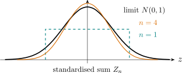

7.2 Weak Law of Large Numbers and Central Limit Theorem
Theorem 7.2.1 (The Weak Law of Large Numbers). Let \(\{X_n\}\) be a sequence of independent
identically distributed random variables each having a finite mean \(\mu \) and finite variance \(\sigma ^2\), then
for any \(\varepsilon >0\)
\[P\Bigg \{\Big |\frac {X_1+X_2+\dots +X_n}{n}-\mu \Big |\geq \varepsilon \Bigg \}\rightarrow 0\hspace {0.3cm} (n\rightarrow \infty )\]
or
\[\Bigg (\lim _{n\rightarrow \infty }P\Bigg \{\Big |\frac {X_1+X_2+\dots +X_n}{n}-\mu \Big |\geq \varepsilon \Bigg \}=0\Bigg )\]
Proof. \begin {align*} P\Bigg \{\Big |\frac {X_1+X_2+\dots +X_n}{n}-\mu \Big |\geq \varepsilon \Bigg \} &=P\{|\overline {X}-\mu |\geq \varepsilon \}\\ &\leq \frac {E(\overline {X}-\mu )^2}{\varepsilon ^2}\\ &=\frac {\Var (\overline {X})}{\varepsilon ^2} =\frac {\sigma ^2}{n\varepsilon ^2}\\ \end {align*}
\[\therefore \hspace {0.5cm} \lim _{n\rightarrow \infty }\Bigg \{P\Bigg (\Big |\frac {X_1+X_2+\dots +X_n}{n}-\mu \Big |\geq \varepsilon \Bigg )\Bigg \}\leq \lim _{n\rightarrow \infty }\frac {\sigma ^2}{n\varepsilon ^2}=0.\]
\[\therefore \hspace {0.4cm} \lim _{n\rightarrow \infty }P\Bigg \{\Big |\frac {X_1+X_2+\dots +X_n}{n}-\mu \Big |\geq \varepsilon \Bigg \}\leq 0\]
\[\implies \hspace {0.3cm} \lim _{n\rightarrow \infty }P\Bigg \{\Big |\frac {X_1+X_2+\dots +X_n}{n}-\mu \Big |\geq \varepsilon \Bigg \}=0.\]
□
Lemma 7.2.2. Let \(\{Y_n\}\) be a sequence of a random variables having distribution function \(F_{Y_n}(\cdot )\) and
moment generating function \(M_n(t)\), \(n\geq 1\) and let \(Y\) be a random variable having distribution function \(F(\cdot )\) and
moment generating function \(M_Y(\cdot )\), if \(\lim \limits _{n\rightarrow \infty }M_n(t)=M(t)\) then \(\lim \limits _{n\rightarrow \infty }F_n(y)=F(y)\) for all values of \(y\) where \(F(y)\) is continuous.
\(Y_n\rightarrow Y\) as \(n\rightarrow \infty \) in distribution (in law).

Theorem 7.2.3 (The Central Limit Theorem). Let \(\{X_n\}\) be a sequence of independent and
identically distributed random variables each having mean \(\mu \) and variance \(\sigma ^2\). Then the distribution
of \(\frac {X_1+X_2+\dots +X_n-n\mu }{\sigma \sqrt {n}}\hspace {0.2cm}\) tends to standard normal as \(n\rightarrow \infty \).
i.e for any \(a\in (-\infty ,\infty )\)
\[P\Bigg \{\frac {X_1+X_2+\dots +X_n-n\mu }{\sigma \sqrt {n}}\leq a\Bigg \}\rightarrow \int _{-\infty }^a\frac {1}{\sqrt {2\pi }}e^{-\frac {1}{2}y^2}dy=\Phi (a)\]
Proof. \[\frac {X_1+X_2+\dots +X_n-n\mu }{\sigma \sqrt {n}}=\frac {\overline {X}-\mu }{\sigma /\sqrt {n}}=\frac {\sqrt {n}(\overline {X}-\mu )}{\sigma }\] We assume that \(\mu =0\) and \(\sigma ^2=1\). Then \(\displaystyle {\frac {\sqrt {n}(\overline {X}-\mu )}{\sigma }=\sqrt {n}\overline {X}=Z_n}.\) \begin {align*} M_{Z_n}(t) &=E\Bigg (e^{tZ_n}\Bigg )=E\Bigg (e^{t\sqrt {n}\overline {X}}\Bigg )\\ &=E\Bigg (e^{t\sqrt {n}\frac {\sum X_i}{n}}\Bigg )\\ &=E\Bigg (\prod ^n_{i=1}e^{\frac {X_it}{\sqrt {n}}}\Bigg )\\ &=\prod ^n_{i=1}E\Bigg (e^{\frac {X_it}{\sqrt {n}}}\Bigg )\hspace {0.5cm} \text {because they are independent}\\ &=\prod ^n_{i=1}M_X(t/\sqrt {n})=\Big (M_X(t/\sqrt {n})\Big )^n\hspace {0.5cm} \text {they are identically distributed}\\ \end {align*}
\[\therefore \hspace {0.5cm} M_{Z_n}(t)=\Big (M_X(t/\sqrt {n})\Big )^n\]
Let \(L(t)=\ln M(t)\)
\begin {align*} L(0) &=\ln M(0)=0\\\\ L'(t) &=\frac {M'(t)}{M(t)}\hspace {1cm} M(0)=1\\\\ L'(0) &=\frac {M'(0)}{M(0)}=\mu \\\\ L''(t) &=\frac {M''(t)M(t)-(M'(t))^2}{(M(t))^2}\\\\ L''(0) &=\frac {E(X^2)-\big (E(X)\big )^2}{1^2}=\Var (X). \end {align*}
\[\text {We want to show that}\hspace {0.4cm}\lim _{n\rightarrow \infty }M_{Z_n}(t)=e^{t^2/2}\hspace {0.4cm}\text {or equivalently we show that}\]
\[\lim _{n\rightarrow \infty }\ln M_{Z_n}(t)=\frac {t^2}{2}.\]
\[\ln M_{Z_n}(t)=n\ln M_X(t/\sqrt {n})=nL(t/\sqrt {n}).\]
\begin {align*} \implies \hspace {0.4cm} \lim _{n\rightarrow \infty }nL(t/\sqrt {n}) &=\lim _{n\rightarrow \infty }\frac {L(t/\sqrt {n})}{1/n}\\ &=\lim _{n\rightarrow \infty }\frac {L'\Big (\frac {t}{\sqrt {n}}\Big ).(-1)t\frac {n^{-\frac {3}{2}}}{2}}{-\frac {1}{n^2}}\\ &=\lim _{n\rightarrow \infty }\frac {tL'\Big (\frac {t}{\sqrt {n}}\Big )}{2n^{-\frac {1}{2}}}\\ &=\frac {t}{2}\lim _{n\rightarrow \infty }\frac {L''\Big (\frac {t}{\sqrt {n}}\Big ).\Big (-\frac {t}{2}\Big )n^{-\frac {3}{2}}}{-\frac {1}{2}n^{-\frac {3}{2}}}\\ &=\frac {t^2}{2}\lim _{n\rightarrow \infty }L''\Big (\frac {t}{\sqrt {n}}\Big )\\ &=\frac {t^2}{2}L'(0)=\frac {t^2}{2}\\ \end {align*}
\[\therefore \hspace {0.5cm} \lim _{n\rightarrow \infty }M_{Z_n}(t)=e^{\frac {1}{2}t^2}\]
The result now follows in the general case by considering the standardized random variable \(Y_i=\frac {X_{i}-\mu }{\sigma }\) and apply
the result above
\[M_{\sqrt {n}\overline {X}}=e^{\frac {1}{2}t^2}\]
\[\sqrt {n}.\overline {Y}=\sqrt {n}.\frac {\sum \limits _{i=1}^nY_i}{n}=\sqrt {n}.\frac {\sum (X_i-\mu )}{n.\sigma }\]
\[M_{\sqrt {n}.\overline {Y}}(t)\rightarrow e^{\frac {1}{2}t^2}.\]
□
Note. The proof shows that the moment generating function of \(Z_n\) converges to \(e^{t^{2}/2}\), which is that of the standard normal. That alone is a statement about functions; what turns it into a statement about distributions is the continuity theorem of the chapter on generating functions. Without that theorem the calculation above would establish nothing about \(P(Z_n\leq z)\), and it is worth being explicit that the last step of the proof is an appeal to it rather than an observation.
The argument also assumes the moment generating function exists in a neighbourhood of the origin, which is more than the theorem needs. The general proof replaces \(M\) by the characteristic function \(\varphi (t)=E(e^{itX})\), which always exists, and appeals to Lévy’s continuity theorem in its place. The structure is identical.
Remark. Though the theorem says for each \(a\). \begin {align*} \lim _{n\rightarrow \infty }P\Bigg \{\frac {\sqrt {n}\hspace {0.1cm}(\overline {X}-\mu )}{\sigma }\Bigg \} &=\Phi (a)\\ &=\int ^a_{-\infty }\frac {1}{\sqrt {2\pi }}e^{-\frac {1}{2}y^2}dy \end {align*}
It can be shown that the convergence is uniform in \(a\).
Uniform convergence: \(f_n(a)\longrightarrow f(a)\) \((n\rightarrow \infty )\) uniformly in \(a\) if for each \(\varepsilon >0\exists N \ni |f_n(a)-f(a)|<\varepsilon \) for all \(a\) whenever \(n>N\).
Example 7.2.4. The number of tourists that sign in for a trip to Victoria falls is a Poisson
random variable with mean 60.
The company in charge of the four operators has decided that if the number signing in is 80
or more it will have two buses, whereas if the number is less than 80, it will hire only one bus.
What is the probability that the company will have to hire two buses?
Let \(X\) be the number of tourists that sign in. The company will hire two buses if \(x\geq 80\). \begin {align*} \text {The exact probability}&=P(X\geq 80)\\ &=\sum ^{\infty }_{x=80}\frac {60^x\hspace {0.1cm e^{-60}}}{x!}\\ &=1-\sum ^{79}_{x=0}\frac {60^x\hspace {0.1cm e^{-60}}}{x!} \end {align*}
The computation is tidiuous, we approximate it using the central limit
theorem.
A Poisson with mean 60 is a sum of ’60’ independent Poisson each with mean 1.
\[\text {i.e}\hspace {0.5cm} X=\sum ^{60}_{i=1}x_i,\hspace {0.5cm}\text {where}\hspace {0.3cm} x_i\thicksim P(1)\]
\begin {align*} P(X\geq 80) &=P\Bigg (\sum ^{60}_{i=1}x_i\geq 80\Bigg )\\\\ &=P\Bigg \{\frac {\sum \limits ^{60}_{i=1}x_i-60}{\sqrt {60}}\geq \frac {80-60}{\sqrt {60}}\Bigg \}\\\\ &=P\Bigg \{Z\geq \frac {20}{\sqrt {60}}\Bigg \}\\\\ &=P\{Z\geq 2.5819\}\\ &=1-\Phi (2.58)\\ &= \\ \end {align*}
Example 7.2.5. If \(10\) fair dice are rolled, find an approximate probability that the sum
obtained is between \(40\) and \(50\).
Let \(X_i=\) the number for \(i^{th}\) die,
\[\text {then}\hspace {0.3cm} X=\sum ^{10}_{i=1}x_i=\hspace {0.2cm}\text {the sum obtained}\]
\[P(40<X<50)=P\Big (40<\sum ^{10}_{i=1}x_i<50\Big )\]
\begin {align*} E(x_i) &=\sum ^6_{j=1}jP(x_i=j) =\sum ^6_{j=1}j\frac {1}{6}\\ &=\frac {1}{6}\Big (\frac {6(6+1)}{2}\Big )\\ &=\frac {7}{2}\\ &=3.5\\ \end {align*}
\begin {align*} E(x_i^2) &=\sum ^6_{j=1}j^2P(x_i=j)\\ &=\sum ^6_{j=1}j^2\frac {1}{6}\\ &=\frac {1}{6}(91),\hspace {1cm}\text {from}\hspace {0.5cm}\sum ^N_{x=1}x^2=\frac {(N+1)(2N+1)}{6}\\ &=\frac {91}{6}\\ \end {align*}
\[\Var (x_i)=\frac {91}{6}-\Big (\frac {7}{2}\Big )^2=\frac {91}{6}-\frac {49}{4}=\frac {35}{12}\]
\[E(X)=10\times \frac {7}{2}=35\]
\[\Var (X)=10\times \frac {35}{12}=\frac {175}{6}\]
\begin {align*} P\Bigg \{\frac {40-35}{\sqrt {175/6}}<Z<\frac {50-35}{\sqrt {175/6}}\Bigg \} &=\Phi \Bigg (\frac {15}{\sqrt {175/6}}\Bigg )-\Phi \Bigg (\frac {5}{\sqrt {175/6}}\Bigg )\\\\ &= \end {align*}
Theorem 7.2.6 (Central Limit Theorem for Independent Random Variables).
Let \(\{X_n\}\) be a sequence of independent random variables having respective means \(\mu _i=E(X_i)\) and \(\sigma ^2_i=\Var (X_i)\). If \((a)\) the \(X_i's\) are
uniformly bounded.
\(\text {i.e}\hspace {0.3cm} P\{|X_i|<M\}=1\hspace {0.3cm}\text {for}\hspace {0.3cm} M\in \mathbb {R}^+\hspace {0.3cm}\text {for all}\hspace {0.3cm}i\hspace {0.3cm}\text {and}\hspace {0.3cm} \sum ^{\infty }_{i=1}\sigma ^2_i=\infty ,\) then \begin {align*} \lim _{n \rightarrow \infty }P\Bigg \{\frac {\sum \limits ^{n}_{i=1}(X_i-\mu _i)}{\sqrt {\sum \limits ^n_{i=1}}\sigma ^2_i}\leq a\Bigg \} &=\Phi (a)=\int ^a_{-\infty }\frac {1}{\sqrt {2\pi }}e^{-\frac {1}{2}y^2}dy \end {align*}
Probably the best known result in probability theory is the strong law of large numbers. It states that
the average of a sequence of independent random variables having a common distribution will, with
probability \(1\), converge to the mean of that distribution.
Theorem 7.2.7 (The Strong Law of Large Numbers). Let \(\{X_n\}\) be a sequence of independent and
identically distributed random variables each having a finite mean \(\mu \), then with probability \(1\), \(\dfrac {X_1+X_2+..........+X_n}{n}\longrightarrow \mu \hspace {0.4cm} (n\longrightarrow \infty )\)
\[\text {i.e}\hspace {0.3cm} P\Bigg \{\lim _{n\rightarrow \infty }\frac {X_1+X_2+..........+X_n}{n}=\mu \Bigg \}=1.\]
Proof. We suppose that the distribution from where the sequence comes from has a finite fourth raw moment i.e \(E(X^4)=M<\infty \). Also assume that \(\mu =0\) i.e \(E(X)=E(X_i)=0\). \[\text {Let}\hspace {0.5cm} S_n=X_1+X_2+...........+X_n\] \[E\Big (S^4_n\Big )=E\Big \{(X_1+X_2+...+X_n)(X_1+X_2+...+X_n)(X_1+X_2+...+X_n)(X_1+X_2+...+X_n)\Big \}\] The type of terms in the expansion are five \[X^4_i,\hspace {0.2cm}X^3_iX_j,\hspace {0.2cm}X^2_iX^2_j,\hspace {0.2cm}X^1_iX_jX_l,\hspace {0.2cm} X_iX_jX_lX_k\] \[\text {where}\hspace {0.3cm}i,j,l,k\hspace {0.3cm}\text {are different}\] Three of the terms have expectation zero i.e \begin {align*} E(X^3_iX_j) &=E(X^3_i)E(X_j)=E(X^3_i).0=0\\\\ E(X^2_iX_jX_l) &=E(X_i^2)E(X_j)E(X_l)=0\\\\ E(X_iX_jX_lX_k)&=0 \end {align*}
\begin {align*} \therefore \hspace {0.5cm} E\Big (S^4_n\Big ) &=\sum ^n_{i=1}E(X^4_i)+ \begin {pmatrix} 4\\2\\ \end {pmatrix} \sum _{i\neq j}E(X^2_i)E(X^2_j)\\ &=nM+6 \begin {pmatrix} n\\2\\ \end {pmatrix} \Big (E(X^2)\Big )^2\\ &=nM+3n(n-1)\Big (E(X^2)\Big )^2\\\\ \implies \hspace {0.5cm} E\Big (S^4_n\Big ) &=nM+3n(n-1)\Big (E(X^2)\Big )^2.................(*) \end {align*}
\begin {align*} 0\leq \Var (X^2) &=E\Big (X^2\Big )^2-\Big (E(X^2)\Big )^2\\ &=E(X^4)-\Big (E(X^2)\Big )^2\\ &=M-\Big (E(X^2)\Big )^2\geq 0\\\\ \implies \hspace {0.4cm} M&\geq \Big (E(X^2)\Big )^2 \end {align*}
Then \((*)\) becomes \(E\Big (S_n^4\Big )\leq nM+3n(n-1)M\) \begin {align*} E\Bigg (\frac {S_n^4}{n^4}\Bigg ) &\leq \frac {M}{n^3}+\frac {3(n-1)M}{n^3}\\\\ &=\frac {M}{n^3}+\frac {3M}{n^2}-\frac {3M}{n^3}\\\\ &\leq \frac {M}{n^3}+\frac {3M}{n^2}\\ \end {align*}
\[\therefore \hspace {0.4cm}E\Bigg (\frac {S^4_n}{n^4}\Bigg )\leq \frac {M}{n^2}+\frac {3M}{n^2}\leq \frac {4M}{n^2}\]
\[\implies \hspace {0.4cm} \sum ^{\infty }_{n=1}E\Bigg (\frac {S^4_n}{n^4}\Bigg )\leq 4M\sum ^{\infty }_{n=1}\frac {1}{n^2}<\infty \]
\[\therefore \hspace {0.4cm} \sum ^{\infty }_{n=1}E\Bigg (\frac {S^4_n}{n^4}\Bigg )<\infty \]
\[\implies \hspace {0.5cm} \sum ^{\infty }_{n=1}\frac {S^4_n}{n^4}<\infty \hspace {0.5cm} \implies \hspace {0.5cm} \lim _{n\rightarrow \infty }\frac {S^4_n}{n^4}=0\]
\[\implies \hspace {0.5cm} \lim _{n\rightarrow \infty }\Bigg (\frac {S_n}{n}\Bigg )^4=0\hspace {0.3cm}\implies \hspace {0.3cm}\lim _{n\rightarrow \infty }\frac {S_n}{n}=0\]
\[\lim _{n\rightarrow \infty }\frac {X_1+X_2+..........X_n}{n}=0\]
\[\text {For}\hspace {0.2cm} \mu \neq 0,\hspace {0.2cm}\text { let}\hspace {0.2cm} Y_i=X_i-\mu \]
\[\frac {Y_1+Y_2+........+Y_n}{n}=\frac {X_1+X_2+...........+X_n}{n}-\mu \]
\[\lim _{n\rightarrow \infty }\frac {Y_1+Y_2+..........+Y_n}{n}=0\hspace {0.4cm}\text {with probability}\hspace {0.2cm}1\]
\[\lim _{n\rightarrow \infty }\Bigg (\frac {X_1+X_2+..........+X_n}{n}-\mu \Bigg )=0\]
\[\implies \hspace {0.5cm}\lim _{n\rightarrow \infty }\frac {X_1+X_2+............+X_n}{n}=\mu \]
Q.E.D
Questions on this section
Stuck on something here? Ask below and it stays attached to this topic.